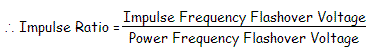

To ensure the desired performance of an electrical insulator, that is for avoiding unwanted insulator failure, each insulator has to undergo numbers of insulator test.
Before going through
testing of insulator we will try to understand different causes of
insulator failure. Because insulator testing ensures the quality of electrical insulator and chances for
failure of insulation depend upon the quality of insulator.
Causes of Insulator Failure
There are different causes due to which failure of insulation in electrical power system may occur. Let's have a look on them one by one-
Cracking of Insulator
The porcelain insulator mainly consists of three different materials. The main porcelain body, steel fitting arrangement and cement to fix the steel part with porcelain. Due to changing climate conditions, these different materials in the insulator expand and contract in different rate. These unequal expansion and contraction of porcelain, steel and cement are the chief cause of cracking of insulator.
Defective Insulation Material
If the insulation material used for insulator is defective anywhere, the insulator may have a high chance of being puncher from that place.
Porosity in The Insulation Materials
If the porcelain insulator is manufactured at low temperatures, it will make it porous, and due to this reason it will absorb moisture from air thus its insulation will decrease and leakage electric current will start to flow through the insulator which will lead to insulator failure.
Improper Glazing on Insulator Surface
If the surface of porcelain insulator is not properly glazed, moisture can stick over it. This moisture along with deposited dust on the insulator surface, produces a conducting path. As a result the flash over distance of the insulator is reduced. As the flash over distance is reduced, the chance of failure of insulator due to flash over becomes more.
Flash Over Across Insulator
If flash over occurs, the insulator may be over heated which may ultimately results into shuttering of it.
Mechanical Stresses on Insulator
If an insulator has any weak portion due to manufacturing defect, it may break from that weak portion when mechanical stress is applied on it by its conductor.
These are the main causes of insulator failure. Now we will discuss the different
insulator test procedures to ensure minimum chance of failure of insulation.
Insulator Testing
According to the British Standard, the electrical insulator must undergo the following tests
1. Flashover tests of insulator,
2. Performance tests and
3. Routine tests
Let's have a discussion one by one-
Flashover Test
There are mainly three types of flashover test performed on an insulator and these are-
Power Frequency Dry Flashover Test of Insulator
1. First the insulator to be tested is mounted in the manner in which it would be used practically.
2. Then terminals of variable power frequency voltage source are connected to the both electrodes of the insulator.
3. Now the power frequency voltage is applied and gradually increased up to the specified value. This specified value is below the minimum flashover voltage.
4. This voltage is maintained for one minute and observe that there should not be any flash-over or puncher occurred.
The insulator must be capable of sustaining the specified minimum voltage for one minute without flash over.
Power Frequency Wet Flashover Test or Rain Test of Insulator
1. In this test also the insulator to be tested is mounted in the manner in which it would be used practically.
2. Then terminals of variable power frequency voltage source are connected to the both electrodes of the insulator.
3. After that the insulator is sprayed with water at an angle of 45o in such a manner that its precipitation should not be more 5.08 mm per minute. The resistance of the water used for spraying must be between 9 kΩ 10 11 kΩ per cm3 at normal atmospheric pressure and temperature. In this way we create artificial raining condition.
4. Now the power frequency voltage is applied and gradually increased up to the specified value.
5. This voltage is maintained for either one minute or 30 second as specified and observe that there should not be any flash-over or puncher occurred. The insulator must be capable of sustaining the specified minimum power frequency voltage for specified period without flash over in the said wet condition.
Power Frequency Flashover Voltage test of Insulator
1. The insulator is kept in similar manner of previous test.
2. In this test the applied
voltage is gradually increased in similar to that of previous tests.
3. But in that case the
voltage when the surroundings air breaks down, is noted.
Impulse Frequency Flashover Voltage Test of Insulator
The overhead outdoor insulator must be capable of sustaining high voltage surges caused by lightning etc. So this must be tested against the high voltage surges.
1. The insulator is kept in similar manner of previous test.
2. Then several hundred thousands Hz very high impulse voltage generator is connected to the insulator.
3. Such a voltage is applied to the insulator and the spark over voltage is noted.
The ratio of this noted voltage to the voltage reading collected from power frequency flashover voltage test is known as impulse ratio of insulator.

This ratio should be approximately 1.4 for pin type insulator and 1.3 for suspension type insulators.
Now we will discuss performance test of insulator one by one-
Temperature Cycle Test of Insulator
1. The insulator is first heated in water at 70oC for one hour.
2. Then this insulator immediately cooled in water at 7oC for another one hour.
3. This cycle is repeated for three times.
4. After completion of these three temperature cycles, the insulator is dried and the glazing of insulator is thoroughly observed.
After this test there should not be any damaged or deterioration in the glaze of the insulator surface.
Puncture Voltage Test of Insulator
1. The insulator is first suspended in an insulating oil.
2. Then voltage of 1.3 times of flash over voltage, is applied to the insulator.
A good insulator should not puncture under this condition.
Porosity Test of Insulator
1. The insulator is first broken into pieces.
2. Then These broken pieces of insulator are immersed in a 0.5 % alcohol solution of fuchsine dye under pressure of about 140.7 kg ⁄ cm2 for 24 hours.
3. After that the sample are removed and examine.
The presence of a slight porosity in the material is indicated by a deep penetration of the dye into it.
Mechanical Strength Test of Insulator
1. The insulator is applied by 2½ times the maximum working strength for about one minute.
The insulator must be capable of sustaining this much mechanical stress for one minute without any damage in it.
Routine Test of Insulator
Each of the insulator must undergo the following routine test before they are recommended for using at site.
Proof Load Test of Insulator
In proof load test of insulator, a load of 20% in excess of specified maximum working load is applied for about one minute to each of the insulator.
Corrosion Test of Insulator
In corrosion test of insulator,
1. The insulator with its galvanized or steel fittings is suspended into a copper sulfate solution for one minute.
2. Then the insulator is removed from the solution and wiped, cleaned.
3. Again it is suspended into the copper sulfate solution for one minute.
4.The process is repeated for four times.
Then it should be examined and there should not be any disposition of metal on it.
 by
by